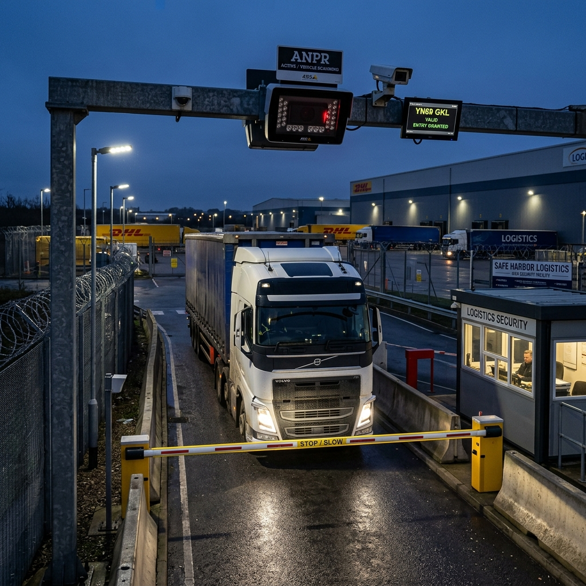

Enterprise ANPR & Vehicle Access: 2026 License Plate Recognition & Barrier Automation

1. Executive Summary: The Vehicle Access Control Paradigm
Securing the vehicular perimeter of high-security commercial estates, industrial logistics parks, corporate headquarters, and distribution centers requires transitioning from manual guardhouse logging to highly autonomous, AI-driven Automatic Number Plate Recognition (ANPR). Legacy vehicle access control architectures relied on security guards manually inspecting paper manifests or drivers presenting physical RFID proximity cards at pedestal keypads. These manual methods introduce severe operational bottlenecks, creating massive traffic backups onto public roadways during peak morning shift changes while leaving the facility highly vulnerable to credential sharing, tailgating, and unauthorized vehicle entry.
Furthermore, legacy ANPR cameras frequently utilized uncalibrated optical sensors and basic Optical Character Recognition (OCR) software running on centralized servers. These early systems proved highly unreliable in real-world commercial environments; plate capture accuracy plummeted during heavy rain, blinding vehicle headlight glare, direct solar blooming, or when vehicles traversed the entry lane at speeds exceeding 15 mph.
```
+------------------------+-----------------------------------+-----------------------------------+
| Operational Metric | Legacy Vehicle Access Control | 2026 AI ANPR & Barrier Automation |
+------------------------+-----------------------------------+-----------------------------------+
| Primary Credential | Physical RFID Card / Manual Guard | AI License Plate OCR / Mobile BLE |
| OCR Processing Engine | Centralized VMS Server CPU | Camera Edge NPU (Neural PU) |
| Plate Capture Accuracy | Highly Variable (~75% in rain/dark)| Flawless (>99.4% in all weather) |
| Vehicle Throughput | Low (~4 vehicles per minute) | High (~15 vehicles per minute) |
| Relay Integration | Direct Unsupervised Relay Wiring | Wiegand Controller Isolation |
+------------------------+-----------------------------------+-----------------------------------+
```
This comprehensive architectural guide establishes the definitive 2026 engineering standards for enterprise ANPR and vehicle access control. Security directors, lead system integrators, and infrastructure architects will explore the advanced optical physics, neural OCR edge processing, and barrier automation mechanics required to deploy frictionless, high-throughput vehicular access grids capable of achieving 99.4% plate recognition accuracy in all environmental conditions.
2. ANPR Optical Physics & Shutter Speed Calibration
Capturing crystal-clear, court-admissible license plate images from moving vehicles traveling up to 50 mph requires a deep mastery of optical physics, shutter speed mechanics, and infrared illumination synchronization.
Shutter Speed Calibration & Motion Blur Elimination
A fundamental challenge of ANPR optical engineering is eliminating motion blur. When a vehicle passes an entry camera at 30 mph, standard surveillance cameras operating at default shutter speeds (`1/30s` or `1/60s`) capture a blurred, distorted streak of light completely unreadable by OCR algorithms.
```
+------------------------+-----------------------------------+-----------------------------------+
| Target Vehicle Velocity| Mandatory Shutter Speed Calibration| Resulting Optical Image Quality |
+------------------------+-----------------------------------+-----------------------------------+
| Static / Stop & Go | 1/250 Second | Crisp / Zero Motion Blur |
| Low Speed (<15 mph) | 1/500 Second | Crisp / Sharp Plate Characters |
| Medium Speed (<30 mph) | 1/1000 Second | Crisp / Eliminates Fast Motion Blur|
| High Speed (<55 mph) | 1/2000 Second | Crisp / Flawless Highway Capture |
+------------------------+-----------------------------------+-----------------------------------+
```
2026 enterprise ANPR standards mandate the deployment of specialized, high-speed global shutter CMOS sensors configured with aggressive shutter speed calibrations. For commercial access control lanes where vehicles travel between 15 mph and 30 mph, the camera's electronic shutter must be clamped to a minimum speed of `1/1000s`. This lightning-fast exposure freezes vehicle motion instantly, ensuring sharp, high-contrast character definition across the license plate surface.
Headlight Suppression & Pulsed Infrared Illumination
During nighttime operations, oncoming vehicle headlights produce intense optical blooming and lens flare that completely blinds standard optical sensors, rendering the license plate invisible in a wash of white light.
```
+-------------------------------------------------------------------+
| ANPR Headlight Suppression & Pulsed Infrared Optical Physics |
+-------------------------------------------------------------------+
| |
| [ Oncoming Vehicle ] (Blinding Headlights + Reflective Plate) |
| | |
| |-- (Intense White Light Glare) --> [ Optical Filter ] |
| | (Blocks Visible Light) |
| | | |
| |<-- (Pulsed 850nm Infrared Beam) -- [ ANPR IR Array ] |
| | | |
| +-- (High-Contrast IR Reflection) -> [ CMOS Sensor ] |
| (Captures Crisp Plate) |
+-------------------------------------------------------------------+
```
To achieve flawless nighttime capture, professional ANPR cameras (such as the Hikvision dedicated ANPR series) utilize a dual-component optical filtering system paired with high-output pulsed infrared (IR) LED arrays. The camera lens is fitted with a specialized bandpass optical filter that completely blocks visible light (including blinding halogen and LED headlight glare), permitting only infrared light to pass through to the CMOS sensor.
Simultaneously, the camera's integrated 850nm infrared LED array pulses synchronized bursts of IR light directly at the approaching vehicle. Because modern license plates are manufactured utilizing highly reflective retro-reflective sheeting, the IR light bounces aggressively off the plate characters and returns to the sensor, generating a pristine, high-contrast black-and-white image of the license plate while the surrounding blinding headlights are completely suppressed.
3. Neural OCR Edge Processing & Wiegand Controller Isolation
The defining technological leap in 2026 ANPR architecture is the migration of Optical Character Recognition (OCR) algorithms from centralized server farms directly onto the camera's internal Neural Processing Unit (NPU).
```
+-------------------------------------------------------------------+
| AI Edge ANPR Neural OCR Processing & Wiegand Isolation Workflow |
+-------------------------------------------------------------------+
| 1. Vehicle approaches Gate 1; CMOS sensor captures IR plate image |
| 2. Camera Edge NPU executes Neural CNN OCR character extraction |
| 3. NPU matches extracted string "AB72 XYZ" against local whitelist|
| 4. Match Confirmed! Camera converts string to Wiegand Data Stream |
| 5. Camera transmits Wiegand pulses to isolated Door Controller |
| 6. Controller validates Wiegand string & fires barrier relay |
+-------------------------------------------------------------------+
```
Convolutional Neural Network (CNN) OCR Extraction
Edge ANPR cameras utilize advanced Convolutional Neural Networks (CNNs) trained specifically on international license plate syntaxes, regional fonts, and dirty or damaged character sets. When a plate image is captured, the edge NPU executes real-time character segmentation, analyzing structural geometry, kerning, and dirt occlusion to extract the exact alphanumeric string in sub-second timeframes (`<0.15 seconds`).
Executing OCR at the edge ensures that plate recognition continues to operate flawlessly even if the external WAN connection or central VMS server experiences a catastrophic outage, guaranteeing uninterrupted vehicular ingress and egress.
Wiegand Controller Isolation vs. Direct Relay Wiring
A critical security vulnerability of early ANPR installations was the utilization of direct, onboard camera relays to open the motorized barrier gate. In legacy setups, the ANPR camera contained an internal dry-contact relay wired directly to the barrier gate's motor control board. A sophisticated threat actor could physically detach the external camera from its mounting pole, short the exposed internal relay wires together, and autonomously open the high-security barrier gate.
```
+------------------------+-----------------------------------+-----------------------------------+
| Security Attribute | Legacy Direct Camera Relay Wiring | 2026 Wiegand Controller Isolation |
+------------------------+-----------------------------------+-----------------------------------+
| Wiring Architecture | Relay in Camera -> Barrier Motor | Camera -> Wiegand -> Controller |
| Physical Vulnerability | High (Shorting camera opens gate) | Zero (Camera contains no relays) |
| Access Control Logging | Isolated in Camera SD Card | Centralized in Enterprise VMS/ACS |
| Anti-Passback Control | None | Hard Anti-Passback Enforced |
+------------------------+-----------------------------------+-----------------------------------+
```
2026 enterprise security standards strictly prohibit direct camera relay wiring. Professional ANPR architectures mandate Wiegand Controller Isolation. The ANPR camera contains no active door relays; instead, when a license plate is successfully captured and matched against the internal whitelist, the camera converts the alphanumeric string into a standardized Wiegand or OSDP data stream.
This data stream is transmitted securely across internal conduits to an isolated, secure intelligent door controller located inside a protected building communications closet. The controller evaluates the Wiegand string, verifies active access schedules, and fires its own internal, secure relay to open the barrier gate, completely eliminating external physical tampering vulnerabilities.
4. Automated Rising Barrier Gate Integration & Safety Logic
Achieving a seamless, high-throughput vehicular access lane requires pairing ANPR identification with heavy-duty, rapid-opening motorized barrier gates equipped with failsafe dual-loop safety logic.
```
+-------------------------------------------------------------------+
| Automated Barrier Gate ANPR Lane Geometry & Dual-Loop Safety Logic|
+-------------------------------------------------------------------+
| |
| [ ANPR Camera ] (Focal Point: 15m) |
| | |
| v |
| (=== Arming Loop 1 ===) ---> [ Automated Rising Barrier Gate ] |
| (Detects approaching metal) | |
| v |
| (=== Safety Loop 2 ===) |
| (Prevents arm closing on vehicle) |
+-------------------------------------------------------------------+
```
Rapid-Opening Motorized Barrier Gates
Commercial high-security access lanes require heavy-duty motorized barrier gates engineered for continuous, 100% duty-cycle operations. Modern barrier gates feature brushless DC motors paired with precision elliptical gear drives capable of throwing a 4-meter aluminum barrier arm from fully closed to fully open in sub-second timeframes (`0.9 to 1.5 seconds`). This rapid actuation allows commercial facilities to sustain high vehicle throughput rates (`up to 15 vehicles per minute`), completely eliminating traffic congestion at the facility boundary.
Dual-Loop Induction Safety Logic
To prevent catastrophic mechanical collisions where a closing barrier arm strikes a passing vehicle or pedestrian, enterprise access lanes must be engineered with rigorous Dual-Loop Induction Safety Logic.
```
+------------------------+-----------------------------------+-----------------------------------+
| Loop Sensor Type | Physical Placement | Operational Safety Function |
+------------------------+-----------------------------------+-----------------------------------+
| Arming Loop (Loop 1) | Buried 15m upstream of barrier | Triggers ANPR camera IR plate snap|
| Safety Loop (Loop 2) | Buried directly beneath barrier arm| Prevents arm closing while occupied|
| Photocell Beam Matrix | Mounted across barrier opening | Secondary optical backup safety |
+------------------------+-----------------------------------+-----------------------------------+
```
Technicians saw-cut two distinct inductive wire loops directly into the concrete entry lane. The Arming Loop (`Loop 1`) is buried approximately 15 meters upstream of the barrier gate. When a vehicle drives over Loop 1, the change in magnetic inductance instantly wakes the ANPR camera, triggering the high-speed electronic shutter and pulsed IR array to capture the plate.
The Safety Loop (`Loop 2`) is buried directly beneath the physical trajectory of the aluminum barrier arm. While a vehicle's metal chassis remains positioned over Loop 2, the barrier controller's internal safety relay is structurally latched open. Under no circumstances will the barrier arm descend, even if the access control panel issues an explicit close command. The arm will only initiate its downward trajectory once the vehicle has completely cleared Loop 2 and broken a secondary optical photocell beam matrix, guaranteeing absolute physical safety for passing vehicular traffic.
5. Comprehensive Expert Frequently Asked Questions
Why is shutter speed calibration to 1/1000s mandatory for commercial ANPR camera deployments?
Standard surveillance cameras operating at default shutter speeds (`1/30s` or `1/60s`) capture blurred, distorted streaks of light when vehicles pass an entry lane at speeds exceeding 15 mph, rendering the license plate completely unreadable by Optical Character Recognition (OCR) algorithms. 2026 enterprise ANPR standards mandate clamping the camera's electronic global shutter to a minimum speed of `1/1000s`. This lightning-fast exposure freezes vehicle motion instantly, eliminating motion blur and ensuring crisp, high-contrast character definition across the plate surface for flawless OCR extraction.
How do ANPR cameras suppress blinding vehicle headlights utilizing pulsed infrared illumination?
During nighttime operations, oncoming vehicle headlights produce intense optical blooming and lens flare that blinds standard optical sensors. Professional ANPR cameras utilize a dual-component optical filtering system paired with high-output pulsed 850nm infrared LED arrays. The camera lens is fitted with a specialized bandpass filter that completely blocks visible light (including blinding halogen/LED headlight glare), permitting only infrared light to pass. Simultaneously, the pulsed IR array floods the approaching vehicle; the IR light bounces aggressively off the retro-reflective license plate sheeting, returning a pristine, high-contrast image to the sensor while surrounding headlights are suppressed.
What is the security vulnerability of direct camera relay wiring, and how does Wiegand isolation resolve it?
In legacy ANPR installations, the camera contained an internal dry-contact relay wired directly to the barrier gate's motor control board. A threat actor could physically detach the external camera from its pole, short the exposed internal relay wires together, and autonomously open the high-security barrier gate. 2026 enterprise standards strictly prohibit direct camera relays, mandating Wiegand Controller Isolation. The ANPR camera contains no active relays; instead, upon matching a plate, it transmits a secure Wiegand or OSDP data stream to an isolated intelligent door controller located inside a protected building closet. The controller evaluates the string and fires its own internal relay to open the barrier, eliminating external tampering risks.
How does edge Neural Processing Unit (NPU) OCR extraction ensure uninterrupted commercial gate operations?
Legacy ANPR architectures relied on streaming uncompressed video feeds back to a centralized server farm for Optical Character Recognition (OCR) evaluation. If the external WAN connection failed or the central server crashed, gate operations ground to a halt. Modern ANPR cameras feature dedicated edge Neural Processing Units (NPUs) running advanced deep learning Convolutional Neural Networks (CNNs) directly on the camera silicon. The camera autonomously captures, segments, and extracts plate characters in sub-second timeframes (`<0.15s`), ensuring that vehicle authorization and barrier gate operations continue to function flawlessly even during complete network or central server outages.
What is the operational function of Dual-Loop Induction Safety Logic in automated barrier gate lanes?
Dual-Loop Induction Safety Logic utilizes two distinct magnetic wire loops saw-cut into the concrete entry lane to ensure rapid throughput and absolute physical safety. The Arming Loop (`Loop 1`), buried 15 meters upstream, detects approaching metal mass and instantly wakes the ANPR camera to capture the plate. The Safety Loop (`Loop 2`), buried directly beneath the barrier arm, acts as a structural failsafe. While a vehicle's chassis remains positioned over Loop 2, the barrier controller's internal safety relay is latched open, structurally preventing the aluminum arm from descending and striking the vehicle, even if the access controller issues a close command.